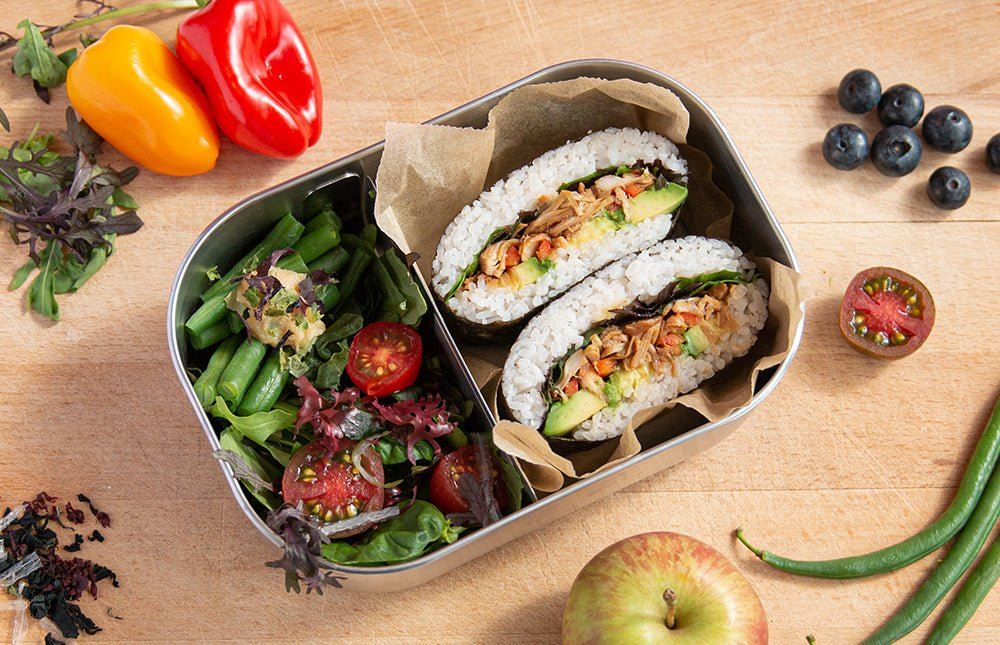

Home
Onigirazu Recipe

Description
Onigirazu is a rice ball (onigiri or omusubi in Japanese) that is NOT squeezed tightly into the traditional shape, like round or triangle.
You can put more fillings inside, as the “rice ball” shape is square and you can spread the ingredients just like how you lay them out for a sandwich. You wrap the fillings from the four corners of nori. So it is kind of like “wrapped rice ball”.
Ingredients
- 1 baked chicken katsu
- 1–2 leaves green cabbage
- 1 sheet nori (dried laver seaweed)
- 1 cup cooked Japanese short-grain rice
- ⅛ tsp Diamond Crystal kosher salt
- 1 tsp Dijon mustard
- 1–2 Tbsp tonkatsu sauce
Steps
- Gather all the ingredients.
- Cut 1–2 leaves green cabbage into julienned slices.
- Place a plastic wrap on a working surface and put 1 sheet nori (dried laver seaweed) on top (shiny side facing down), with a corner pointing up.
- Evenly spread about ½ cup cooked Japanese short-grain rice in a thin layer and form into a square shape in the center of nori sheet. Sprinkle ⅛ tsp Diamond Crystal kosher salt. For Japanese rice ball (onigiri) that are enjoyed at room temperature, we add salt to the rice to keep the food fresh longer.
- Place the shredded cabbage evenly on top of rice and then 1 baked chicken katsu on top.
- Spread 1 tsp Dijon mustard and 1–2 Tbsp tonkatsu sauce.
- Flip over chicken katsu so the sauce is also on the cabbage.
- Place another ½ cup steamed rice on top. Try to keep the square shape as you spread the rice evenly in a thin layer. Bring left and right corners of nori sheet towards the center. Fold gently but tightly to wrap around the layers at the center.
- Then bring the bottom and top corners towards the center. Continue to fold gently but tightly around the layers. Make sure the rice is tucked in nicely.
- If you like the onigirazu to showcase the filling after cutting in half, mark with a piece of shredded cabbage perpendicular to the filling. Wrap with plastic wrap tightly and set aside for 5 minutes.
- Cut the onigirazu with a sharp knife (following the direction of the “cabbage” mark). Run your knife in cold water before cutting so that the cross-section will be clean.